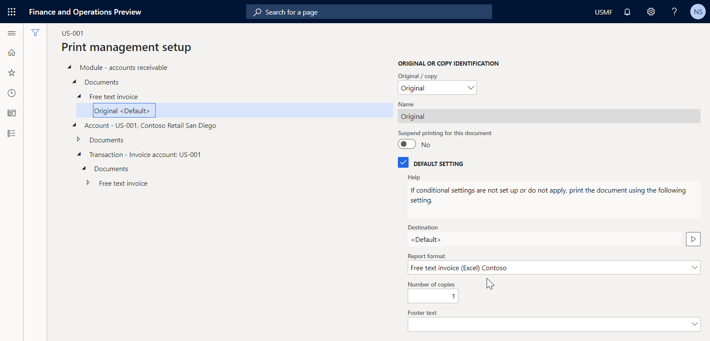

Hinzufügen neuer Felder zu einer Geschäftsdokumentvorlage in Microsoft Excel
[!include[banner](../includes/banner.md)]Sie können einer Vorlage, die zur Generierung von Geschäftsdokumenten im Format Microsoft Excel verwendet wird, neue Felder hinzufügen. Diese Felder können als Platzhalter hinzugefügt werden, mit denen generierte Dokumente mit den erforderlichen Informationen aus der Anwendung gefüllt werden. Für jedes Feld, das Sie hinzufügen, können Sie auch eine Bindung zu den Datenquellen angeben, um festzulegen, welche Anwendungsdaten in das Feld eingegeben werden, wenn die Vorlage zur Generierung von Geschäftsdokumenten verwendet wird.
Weitere Informationen über diese Funktion erhalten Sie, wenn Sie das Beispiel in diesem Thema abschließen. Dieses Beispiel zeigt, wie Sie eine Vorlage aktualisieren, um die Felder in den generierten Freitext-Rechnungsformularen auszufüllen.
Konfigurieren Sie die Geschäftsdokumentenverwaltung, um Vorlagen zu bearbeiten.
Da die Geschäftsdokumentenverwaltung (BDM) auf dem Überblick über die elektronische Berichterstattung (ER) aufbaut, müssen Sie die erforderlichen ER- und BDM-Parameter konfigurieren, bevor Sie mit BDM arbeiten können.
Melden Sie sich auf der Instanz von Microsoft Dynamics 365 Finance als Systemadministrator an.
Führen Sie die folgenden Schritte des Beispiels im Thema Übersicht Geschäftsdokumentenverwaltung aus:
- ER-Parameter konfigurieren.
- Schalten Sie BDM ein.
Sie können nun mit dem BDM beginnen, um Geschäftsdokumentvorlagen zu bearbeiten.
Importieren von ER-Lösungen, die eine Vorlage enthalten
Das Beispiel in diesem Verfahren verwendet die offiziell veröffentlichte ER-Lösung. Sie müssen die ER-Konfigurationen dieser Lösung in Ihre aktuelle Finanzinstanz importieren.
Die Konfiguration der Freitextrechnung (Excel) ER-Format dieser Lösung enthält die Geschäftsdokumentvorlage im Excel-Format, die mit dem BDM bearbeitet werden kann. Importieren Sie die neueste Version dieser ER-Format-Konfiguration aus Microsoft Dynamics Lifecycle Service (LCS). Die entsprechenden ER-Datenmodell- und ER-Modellzuordnungskonfigurationen werden automatisch importiert.
Weitere Informationen zum Importieren von ER-Konfigurationen finden Sie unter Verwaltung des Lebenszyklus der ER-Konfiguration.

Bearbeiten der ER-Lösungsvorlage
Melden Sie sich als Benutzer an, der Zugriff auf den Arbeitsbereich Geschäftsdokumentenverwaltung hat.
Öffnen Sie den Arbeitsbereich Geschäftsdokumentenverwaltung.
Wählen Sie im Raster die Vorlage Freitextrechnung (Excel).
Wählen Sie im rechten Bereich Neue Vorlage, um eine neue Vorlage zu erstellen, die auf der ausgewählten Vorlage basiert.
Geben Sie im Feld Titel als Titel der neuen Vorlage Freitextrechnung (Excel) Contoso ein.
Wählen Sie OK aus, um den Beginn des Bearbeitungsprozesses zu bestätigen.
Die Seite mit dem Editor für BDM-Vorlagen wird angezeigt. Mit Microsoft 365 können Sie die ausgewählte Vorlage online in der eingebetteten Steuerung bearbeiten.
Hinzufügen der Bezeichnung für ein neues Feld zur Vorlage
Aktivieren Sie auf der Seite des BDM-Vorlageneditors, in der Excel-Leiste, auf der Registerkarte Ansicht die Kontrollkästchen Überschriften und Rasterlinien für die editierbare Excel-Vorlage.
Zellen auswählen E8:F8.
Wählen Sie in der Excel-Leiste auf der Registerkarte Start Zusammenführen & Zentrieren, um die ausgewählten Zellen zu einer neuen zusammengeführten E8:F8 Zelle zusammenzuführen.
Geben Sie in der zusammengeführten Zelle E8:F8 URL ein.
Wählen Sie zusammengeführte Zelle E7:F7, wählen Sie Formatkopie, und wählen Sie dann zusammengeführte Zelle E8:F8, um sie genauso zu formatieren wie zusammengeführte Zelle E7:F7.

Formatieren Sie die Vorlage, um Platz für ein neues Feld zu reservieren.
Wählen Sie auf der Seite des BDM-Vorlageneditors die zusammengeführte Zelle G8:H8.
Wählen Sie in der Excel-Leiste auf der Registerkarte Start Zusammenführen & Zentrieren, um die ausgewählten Zellen zu einer neuen zusammengeführten G8:H8 Zelle zusammenzuführen.
Wählen Sie zusammengeführte Zelle G7:H7, wählen Sie Formatkopie, und wählen Sie dann zusammengeführte Zelle G8:H8, um sie genauso zu formatieren wie zusammengeführte Zelle G7:H7.

Wählen Sie im Feld Name CompanyInfo.
Der Bereich CompanyInfo der aktuellen Excel-Vorlage enthält alle Felder, die verwendet werden, um den Kopf eines generierten Berichts mit den Details der aktuellen Firma als Verkäuferpartei zu füllen.
Ein neues Feld zur Vorlage hinzufügen
Wählen Sie auf der Seite BDM-Vorlageneditor, im Aktivitätsbereich Format anzeigen.
Wählen Sie im Bereich Vorlagenstruktur Hinzufügen.
Note
Sie müssen den Abschnitt der Vorlage, den Sie als neues Feld verwenden möchten, anpassen. Sie haben diese Anpassung bereits vorgenommen, indem Sie die zusammengeführte Zelle G8:H8 formatiert haben.

Wählen Sie Excel\Zelle, um ein neues Feld als Zelle in der Vorlage hinzuzufügen.
Sie können Excel\Bereich wählen, wenn Sie der Vorlage einen neuen Bereich hinzufügen möchten. Der eingegebene Bereich kann mehrere Zellen enthalten. Sie können diese Zellen später hinzufügen.
Beachten Sie, dass die Vorlagenkomponente CompanyInfo automatisch im Bereich Vorlagenstruktur ausgewählt wird, da sie die am besten geeignete übergeordnete Komponente in der aktuellen Vorlagenstruktur für das Feld ist, das Sie hinzufügen.
Geben Sie im Feld Excel-Bereich CompanyURL_Value ein.
Wählen Sie OK.

Wählen Sie im Bereich Vorlagenstruktur die Schaltfläche Ellipsis (...) und dann Bindungen anzeigen.

Der Bereich Vorlagenstruktur zeigt nun die Datenquellen an, die im zugrunde liegenden ER-Format verfügbar sind.
Wählen Sie CompanyInfo_Value als Feld, das Sie an eine Datenquelle des zugrunde liegenden ER-Formats binden möchten.
Erweitern Sie im Abschnitt Datenquellen des Bereichs Vorlagenstruktur Modell > InvoiceBase > CompanyInfo.
Wählen Sie unter CompanyInfo den Eintrag WebsiteURI.

Wählen Sie Bindung aus.
Wählen Sie im Bereich Vorlagenstruktur Speichern, und schließen Sie dann die Seite des BDM-Vorlageneditors.
Im Arbeitsbereich Geschäftsdokumentenmanagement zeigt die Registerkarte Vorlage im rechten Bereich die aktualisierte Vorlage an. Beachten Sie im Raster, dass das Feld Status für die bearbeitete Vorlage in Entwurf geändert wurde und das Feld Revision nicht mehr leer ist. Diese Änderungen zeigen an, dass der Prozess der Bearbeitung dieser Vorlage gestartet wurde.
Überprüfen der Unternehmenseinstellungen
- Gehen Sie zu Organisationsverwaltung > Organisationen > Juristische Personen.
- Überprüfen Sie unter Kontaktinformationen Inforegister, ob die Firmen-URL eingegeben wurde.
Generieren Sie Geschäftsdokumente, um die aktualisierte Vorlage zu testen.
Ändern Sie in der Anwendung die Firma auf USMF und gehen Sie zu Forderung > Rechnungen > Alle Freitextrechnungen.
Wählen Sie Rechnung FTI-00000002, und wählen Sie dann Druckverwaltung.
Erweitern Sie im linken Bereich Modul - Debitorenbuchhaltung > Dokumente > Freitextrechnung.
Wählen Sie unter Freitextrechnung die Ebene Originalbeleg, um den Umfang der zu bearbeitenden Rechnungen festzulegen.
Wählen Sie im rechten Bereich im Feld Berichtsformat die Vorlage Freitextrechnung (Excel) Contoso für die angegebene Dokumentebene.

Drücken Sie Esc, um die aktuelle Seite zu schließen.
Wählen Sie Drucken > Ausgewählt.
Laden Sie das generierte Dokument herunter und öffnen Sie es in Excel.

Die geänderte Vorlage wird verwendet, um den Freitextrechnungsbericht für den ausgewählten Artikel zu generieren. Um zu analysieren, wie sich Änderungen, die Sie an der Vorlage vornehmen, auf diesen Bericht auswirken, führen Sie den Bericht in einer Anwendungssitzung unmittelbar nach der Änderung der Vorlage in einer anderen Anwendungssitzung aus.
Zugehörige Links
Überblick über die elektronische Berichterstellung (Electronic reporting, ER)
Geschäftsdokumentverwaltung – Übersicht
Entwerfen einer Konfiguration für das Erstellen von Berichten im OPENXML-Format